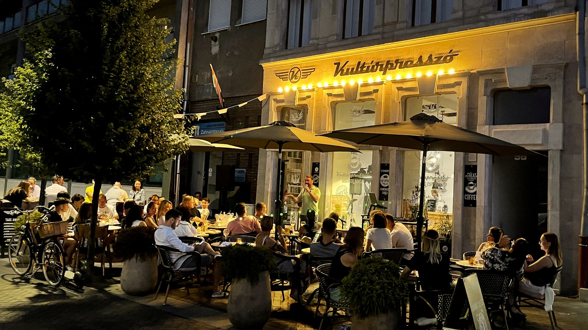
Kávézó a soproni Várkerületen
Specialty kávé és egész nap reggeli abban a házban, ahol 1860-ban Sopron első fényirdája nyílt.
Várkerület 96.
Várkerület 96., este
Sopron első fényirdája volt
Tiefbrunner Sándor 1860-ban ebben a házban nyitotta meg Sopron első fényirdáját, vagyis fényképészeti és üvegszalonját. Portrék, tájképek és sztereó képek készültek itt.
2015 decemberében, egy nyugodt, szilveszter előtti napon nyitottunk kávézót ugyanitt.
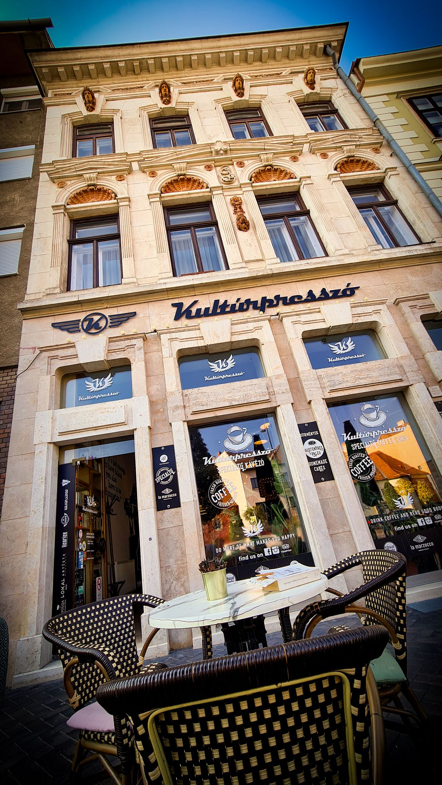
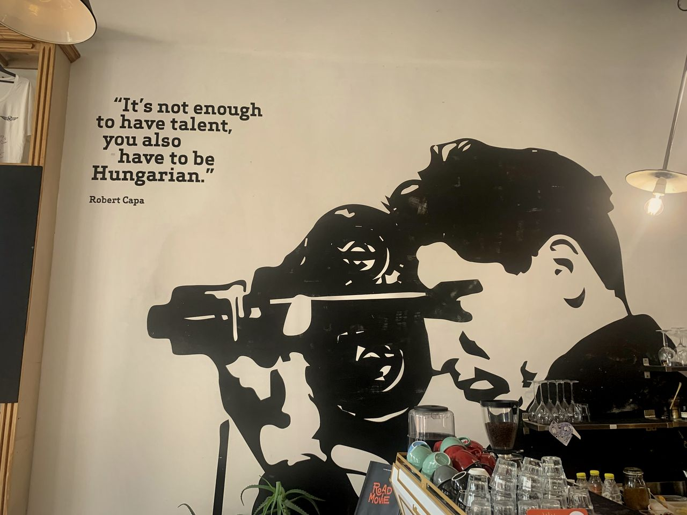
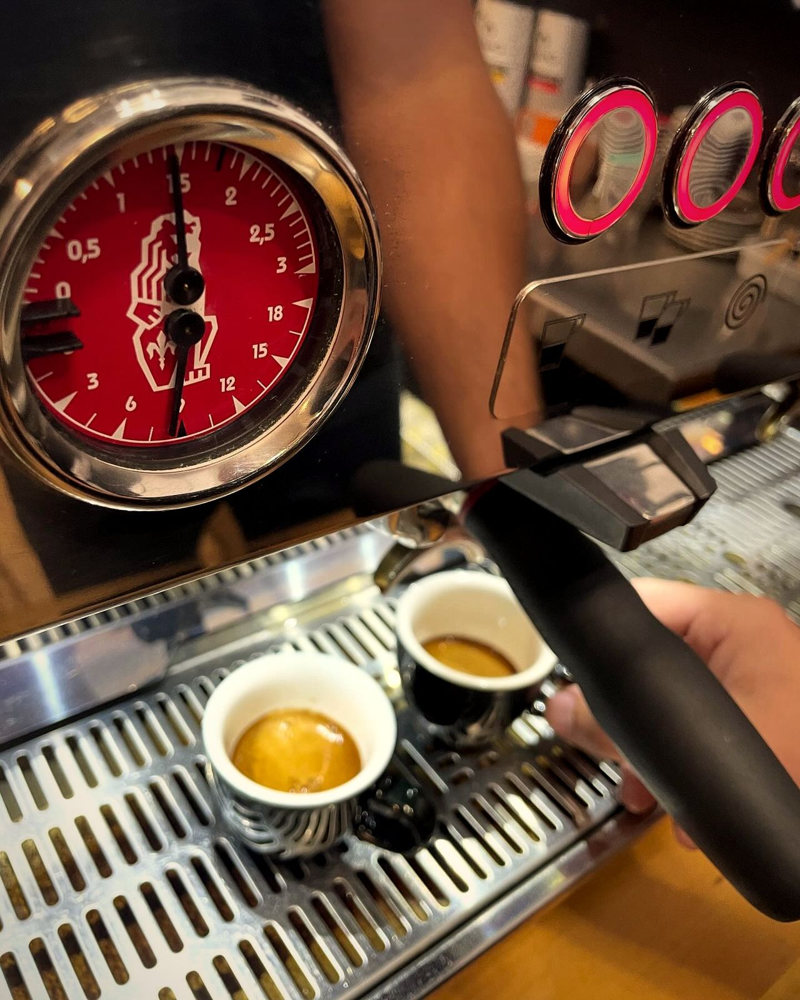
A kávénk
A blendünket a 42 Coffee pörköli nekünk: fele etióp Heirloom, fele brazil Yellow Bourbon, mindkettő natúr feldolgozású.
- Pörkölő
- 42 Coffee
- Gép
- La Marzocco KB90
- Blend
- 50% Etiópia Heirloom, 50% Brazília Yellow Bourbon
- Mellette
- vendégkávé, filter, cold brew
- Növényi tej
- zab, mandula, kókusz
Hogy épp melyik vendégkávé fut, azt a pultnál mondjuk meg.
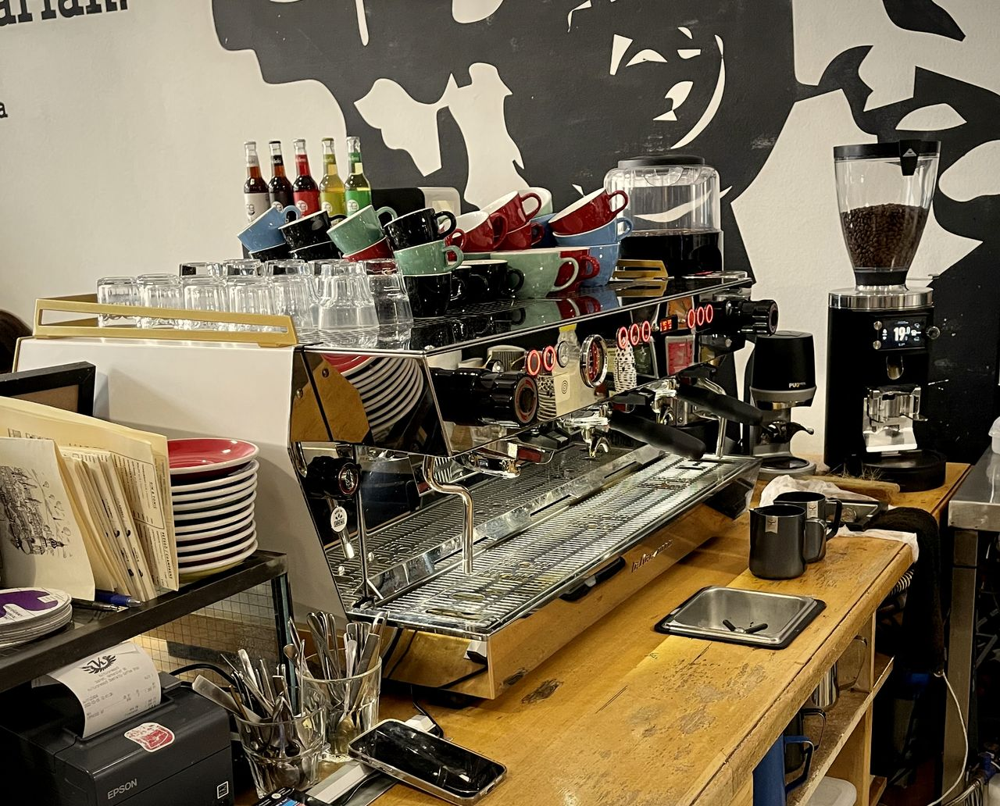
Étlap
Ételek
Egész nap reggeli, szendvicsek és bagelek, krémek és kencék vegán változatban is. Sütemény paleo, gluténmentes és vegán változatban.
Bor és párlat
Soproni borok és párlatok.
A kávék árai a helyi étlapunkról valók. A teljes étlapot és a napi süteményeket a pultnál találja.
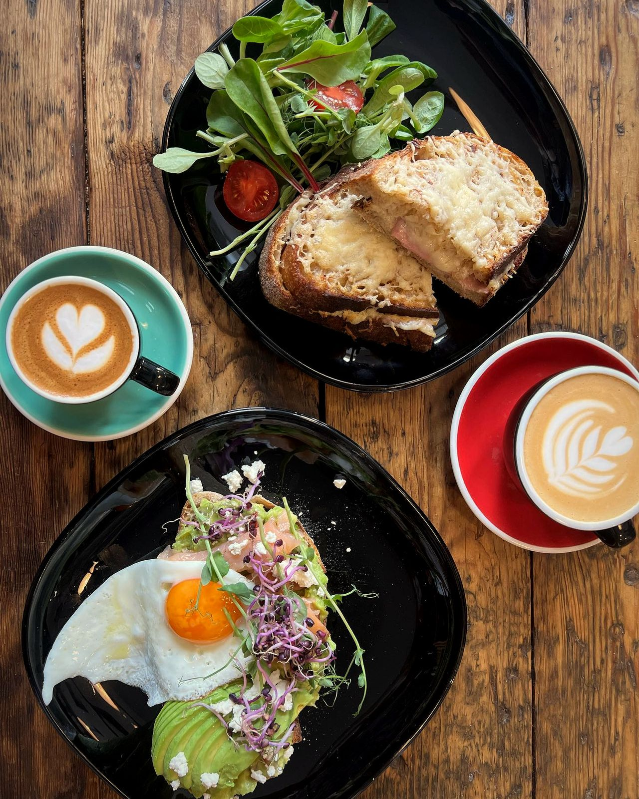
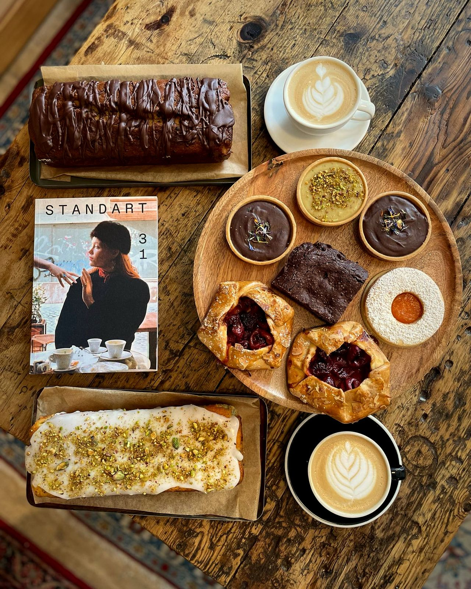
Terasz a Várkerületen
Jó időben kint ülünk a ház előtt, esténként fényfüzér ég a bejárat fölött. Kattintson a fotóra, és előhívjuk.
A presszó belülről
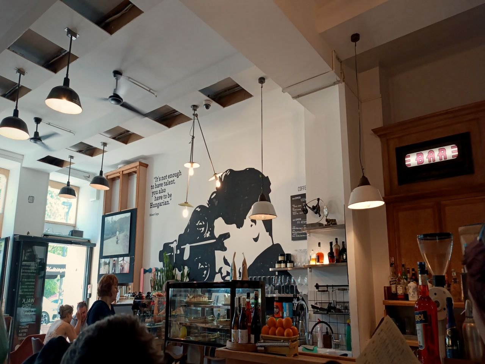
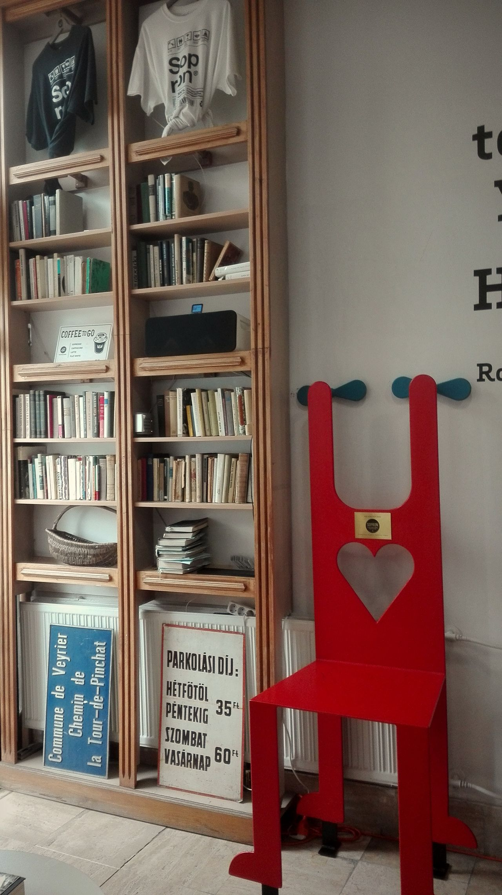
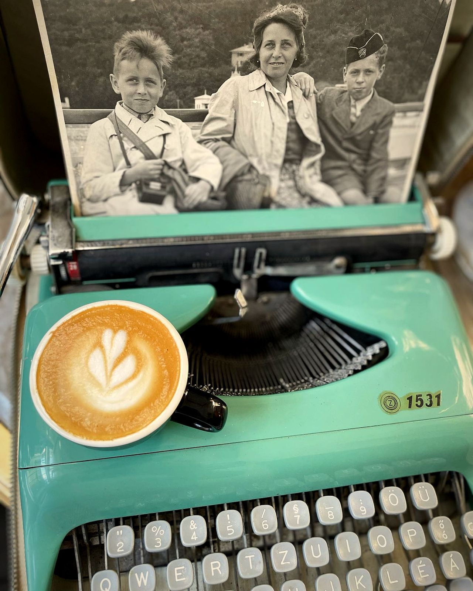
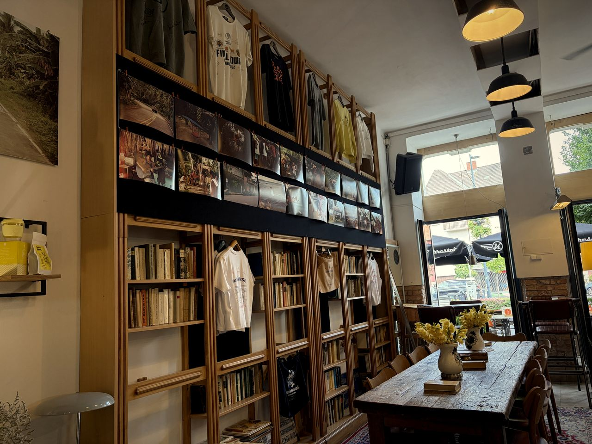
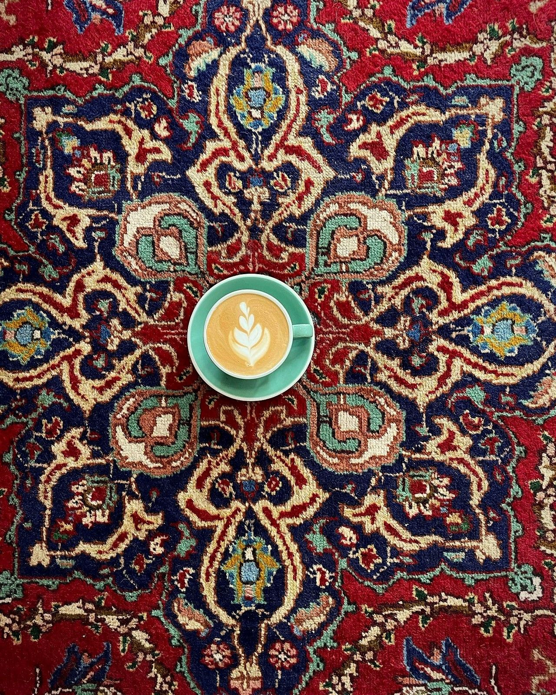
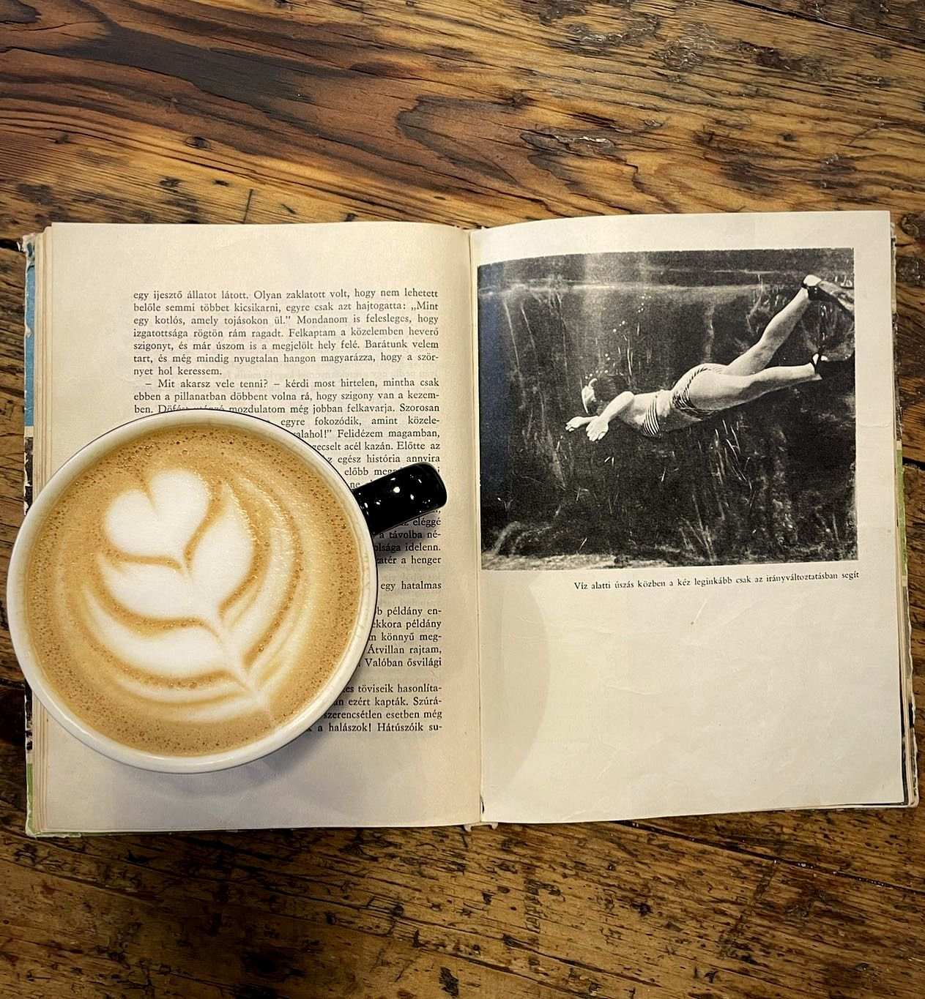
Vendégeink a Google-on
„Állandó reggelizőhelyünk lett ez a csodás hangulatú, irtó cuki, menő hely.”
„Finom kávé, kellemes belső tér, és a Várkerület elragadó hangulata.”
“A perfect espresso macchiato on a lovely September afternoon.”
4,6 csillag, 1230 értékelés a Google-on (2026. november) Az összes vélemény
Programok
Tartunk mini koncerteket, könyvbemutatókat, rendhagyó történelem- és magyarórákat, és születésnapot is ünnepelhet nálunk. A SopronFest idején a teraszunk is helyszín.
A következő programokat az Instagramon jelentjük be. @kulturpresszo
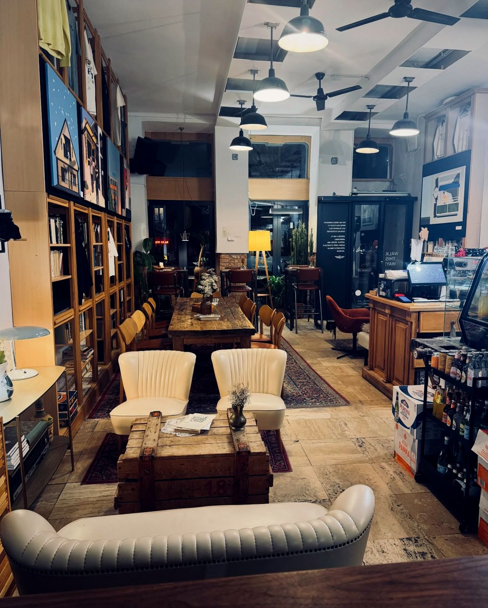
Kultúrpresszó Botanik
2025. május 1. óta a Soproni Egyetem Botanikus kertjében, a Ligneum üvegépületében is főzünk kávét. Hétköznap 8:30–16:00, hétvégén rendezvények idején.
Nyitvatartás
Elérhetőség
9400 Sopron, Várkerület 96.
+36 30 478 5000
info@kulturpresszo.hu
Van wifi, fizethet kártyával, és gyerekkel, kutyával is szívesen látjuk.
A térkép a Google szolgáltatása, betöltéskor a Google sütiket helyezhet el.